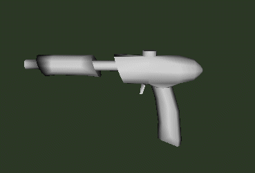

LegalAssassin/Developer Journal
LegalAssassin's random work/work in progress/will be done
Info
This is were I'll put something I have done, or will do, let alone doing. Updates will be random but something might be of interest, and it'll show up on the recent updates page, so... ah, to hell with it, here it is 
Work
20 Nov 2002
Working on a map for TTR (which still wont download properly) and on some gothic stuff for 2k3. I'm using Shane_Church.utx for everything, even static meshes. (Pic below)
21 Nov 2002
Just threw something togheter for [Mod_ideas/Killingspree] joke 
(Drag-and-drop, no remote linking sUx0rz)

10 Dec 2002
Just watched the Nobel awards. Jimmy Carter is smart, unlike other US presidents...
This is a german WW2 rocketplane, well, at least it did blow up quite often
5 Jan 2003
All fingers intact, though I did manage to light 40 rockets at once, IN MY HAND. Lucky me, they were small, so I dropped 'em and ran like hell, rockets flying around me. No danger, but it was fun to see the old people's reaction As always, I get bored, and as always I map when I'm bored. So, I decided to throw a quick beach toghether for TTR. Of course, I started making the terrain behind and now I have actually covered quite a big area. So, next addition will be a town.
Now, I wanted to keep the terrain detail high on the beach, as you wont see that far. However, further inland it'll have to be low-poly, as you see far, over many fields and, of course, the town. So, the terrain brushes got very messy, but my goal's completed. Here's a quick pic of how messy:
![[legalwork_terra_step1]](images/legalwork-terra-step1.gif)
13 Jan 2003
So, I've dropped out of school. Otherwise, everything's normal
You have to see The Two Towers, it's schweet! Only wish I could make the same stuff in UT2003 
Also, I joined the PaintBall: 2003 modteam, less-than-working website: http://www.unrealfans.com/hunter/pb2003/
Basically, AFAIK, it's Paintball. Yes, pretty much it. Here's a Wiki exclusive:

It's a pump-action marker! (Gun, heatens,  )
)
29 Jan 2003
With the world going to war, I'm sitting in my basement and realize that you CAN NOT MAKE A FECKEN TERRAIN WITHOUT 40 UED CRASHES  Wonder if I can get some nukes
Wonder if I can get some nukes
So, back to the good ol' UEd2... Not as nice, but it works
I'm helping a guy out making a map, and he really sucks at mapping. He hasn't read the tutorials properly and he's got everything out of place. I e, tries making movers going from 2 to 0 to 1, a door. I've explained everything twice, still wont do it. Yes, it was properly explained, but he's impatient. All brushes are out of grid, dimensions like 45, 86, 100, 53 and 394 are standard. How do I tell him to slow down, read the tut's and learn the BASIC basics, the things that is in the start of the first tut?
15 Feb 2003
Been helping guys out with small stuff lately, like one item to be skinned, showing how to do complex triggers and movers etc, been working out great really. I'm applying to help Chaos UT out with mapping, I liked the UT release and consider meself insane enough to get something Chaotic together
My dad's 50th birthday is up today (after I've slept) and we'll have at least 30 guests dropping in, so, not much UED tomorrow
Also, I'm trying to stop the Iraq-shit in any way I can, at least for now, though it's not much, at least I do something
Screens of the CUT-map comming up soon 
24 May 2004
Holy shit, there's a LOT of crap on this page! Ah well, can't be bothered to clean up now, here's a sample of one of the things I did
for TTR. It's a map of bunker positions, types and other stuff at a certain dam in Hürtgenwald. This is just one sample of the reference I supplied for mappers, combined with topographic maps showing basic heightlines and both old and new photos, the plan was that it would be possible to create a very nice copy of reality. I guess we all know how that worked out by now :roll:
Sample |